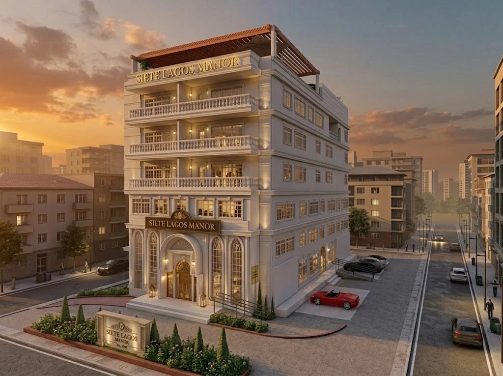

A contemporary sanctuary for everyday family life.
PANGASINAN
A STUDY IN PEOPLE & PLACE
I’m Kollene Aika, an architecture student exploring how thoughtful design can make everyday life more meaningful.

FEATURED STUDY 01 / 06 · HELIODON ACTIVE01 SELECTED EXPLORATIONS
ACADEMIC DESIGN PORTFOLIOFrom the intimacy of a home to the life of a city, each study explores a different way to connect people and place.
A contemporary sanctuary for everyday family life.
Classical elegance, through a local lens.
A conversation between heritage and contemporary life.
Wellness with a sense of belonging.
Connected spaces for a connected community.
A regional gateway, grounded in local identity.
ADDITIONAL ARCHITECTURAL STUDIES · BOARDS 05 TO 14
Documented residential, commercial, hospitality, institutional, and recreational proposals from the 20-page portfolio.
Single-storey residential study presenting an exterior visualization and ground floor plan layout.
Residential architectural visualization study exploring pitched roof massing, stone-and-timber materiality, and site context.
Academic commercial design study presenting a ground floor plan and exterior perspective along Bypass Road.
Proposed luxury hotel and retail center combining hospitality and commercial spaces with contemporary coastal massing.
Proposed women’s correctional institution organized around a courtyard campus system prioritizing humane rehabilitation, education, gardens, and natural ventilation.
Proposed climate-responsive community sports complex exploring inclusive spatial sequencing, tropical passive cooling, and large-span public assembly.
There’s more to the story.12 architectural studies, 6 scale models, and manual plates across 20 boards.

THE PERSON BEHIND THE PLANS↗
02 A LITTLE ABOUT ME
Hi, I’m Kollene. I believe architecture begins with understanding how people live.
I’m a fourth-year Bachelor of Science in Architecture student at Mapúa University. My academic journey explores residential, commercial, hospitality, mixed-use, civic, healthcare, recreational, and transportation spaces through plans, visualizations, and hands-on making.
I’m drawn to design that brings functionality, aesthetics, and sustainability together. For me, a meaningful space responds to its surroundings and makes room for the people who use it.
Let’s start a conversationA FOUNDATION IN LEARNING
Mapúa UniversityBachelor of Science in Architecture
International Colleges for Excellence, Inc.Senior High School · STEM
International Colleges for Excellence, Inc.Junior High School
International Colleges for Excellence, Inc.Primary Education
03 THOUGHT, THEN FORM
THE PROCESS IS PART OF THE WORKA practice of looking closely, testing ideas, and turning concepts into spaces that feel considered.
Consider the users, the setting, and the everyday experiences a space needs to support.
Explore form, light, material, and movement through drawings, scale models, and structural studies.
Translate design thinking into plans, exterior visualizations, and hand-rendered architectural plates.
INTERACTIVE 3D SCALE MODEL WORKBENCH · BOARD 17
Explore all 6 physical scale model studies documented on Board 17 of Kollene’s portfolio.
04 THE NEXT CONVERSATION
IDEAS BEGIN WITH A HELLOHave an opportunity, an idea, or a different way
of seeing things? I’d love to hear from you.